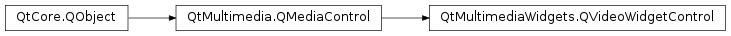

QVideoWidgetControl¶
Detailed Description¶
The
PySide2.QtMultimediaWidgets.QVideoWidgetControlclass provides a media control which implements a video widget.The
PySide2.QtMultimediaWidgets.QVideoWidgetControl.videoWidget()property ofPySide2.QtMultimediaWidgets.QVideoWidgetControlprovides a pointer to a video widget implemented by the control’s media service. This widget is owned by the media service and so care should be taken not to delete it.QVideoWidgetControl *widgetControl = mediaService->requestControl<QVideoWidgetControl *>(); layout->addWidget(widgetControl->videoWidget());
PySide2.QtMultimediaWidgets.QVideoWidgetControlis one of number of possible video output controls.The interface name of
PySide2.QtMultimediaWidgets.QVideoWidgetControlisorg.qt-project.qt.videowidgetcontrol/5.0as defined inQVideoWidgetControl_iid().See also
QMediaService.requestControl()QVideoWidget
-
class
PySide2.QtMultimediaWidgets.QVideoWidgetControl([parent=nullptr])¶ Parameters: parent – PySide2.QtCore.QObjectConstructs a new video widget control with the given
parent.
-
PySide2.QtMultimediaWidgets.QVideoWidgetControl.aspectRatioMode()¶ Return type: PySide2.QtCore.Qt.AspectRatioModeReturns how video is scaled to fit the widget with respect to its aspect ratio.
-
PySide2.QtMultimediaWidgets.QVideoWidgetControl.brightness()¶ Return type: PySide2.QtCore.intReturns the brightness adjustment applied to a video.
Valid brightness values range between -100 and 100, the default is 0.
-
PySide2.QtMultimediaWidgets.QVideoWidgetControl.brightnessChanged(brightness)¶ Parameters: brightness – PySide2.QtCore.int
-
PySide2.QtMultimediaWidgets.QVideoWidgetControl.contrast()¶ Return type: PySide2.QtCore.intReturns the contrast adjustment applied to a video.
Valid contrast values range between -100 and 100, the default is 0.
-
PySide2.QtMultimediaWidgets.QVideoWidgetControl.contrastChanged(contrast)¶ Parameters: contrast – PySide2.QtCore.int
-
PySide2.QtMultimediaWidgets.QVideoWidgetControl.fullScreenChanged(fullScreen)¶ Parameters: fullScreen – PySide2.QtCore.bool
-
PySide2.QtMultimediaWidgets.QVideoWidgetControl.hue()¶ Return type: PySide2.QtCore.intReturns the hue adjustment applied to a video widget.
Value hue values range between -100 and 100, the default is 0.
-
PySide2.QtMultimediaWidgets.QVideoWidgetControl.hueChanged(hue)¶ Parameters: hue – PySide2.QtCore.int
-
PySide2.QtMultimediaWidgets.QVideoWidgetControl.isFullScreen()¶ Return type: PySide2.QtCore.boolReturns true if the video is shown using the complete screen.
-
PySide2.QtMultimediaWidgets.QVideoWidgetControl.saturation()¶ Return type: PySide2.QtCore.intReturns the saturation adjustment applied to a video widget.
Value saturation values range between -100 and 100, the default is 0.
-
PySide2.QtMultimediaWidgets.QVideoWidgetControl.saturationChanged(saturation)¶ Parameters: saturation – PySide2.QtCore.int
-
PySide2.QtMultimediaWidgets.QVideoWidgetControl.setAspectRatioMode(mode)¶ Parameters: mode – PySide2.QtCore.Qt.AspectRatioModeSets the aspect ratio
modewhich determines how video is scaled to the fit the widget with respect to its aspect ratio.
-
PySide2.QtMultimediaWidgets.QVideoWidgetControl.setBrightness(brightness)¶ Parameters: brightness – PySide2.QtCore.intSets a
brightnessadjustment for a video.Valid brightness values range between -100 and 100, the default is 0.
-
PySide2.QtMultimediaWidgets.QVideoWidgetControl.setContrast(contrast)¶ Parameters: contrast – PySide2.QtCore.intSets the contrast adjustment for a video widget to
contrast.Valid contrast values range between -100 and 100, the default is 0.
-
PySide2.QtMultimediaWidgets.QVideoWidgetControl.setFullScreen(fullScreen)¶ Parameters: fullScreen – PySide2.QtCore.boolSets whether a video widget is in
fullScreenmode.
-
PySide2.QtMultimediaWidgets.QVideoWidgetControl.setHue(hue)¶ Parameters: hue – PySide2.QtCore.intSets a
hueadjustment for a video widget.Valid hue values range between -100 and 100, the default is 0.
-
PySide2.QtMultimediaWidgets.QVideoWidgetControl.setSaturation(saturation)¶ Parameters: saturation – PySide2.QtCore.intSets a
saturationadjustment for a video widget.Valid saturation values range between -100 and 100, the default is 0.
-
PySide2.QtMultimediaWidgets.QVideoWidgetControl.videoWidget()¶ Return type: PySide2.QtWidgets.QWidgetReturns the
PySide2.QtWidgets.QWidget.
© 2018 The Qt Company Ltd. Documentation contributions included herein are the copyrights of their respective owners. The documentation provided herein is licensed under the terms of the GNU Free Documentation License version 1.3 as published by the Free Software Foundation. Qt and respective logos are trademarks of The Qt Company Ltd. in Finland and/or other countries worldwide. All other trademarks are property of their respective owners.